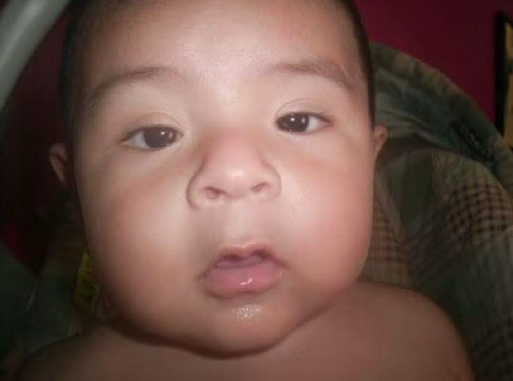
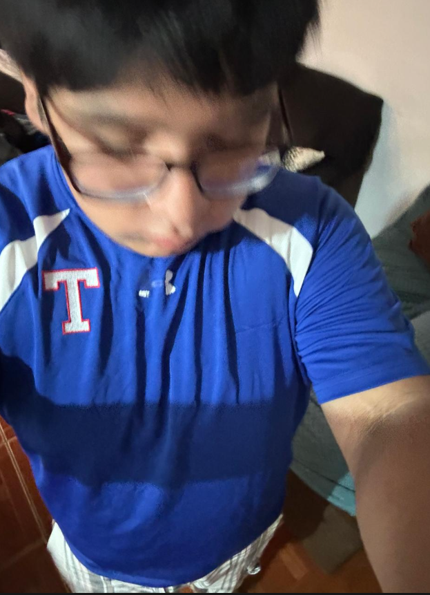
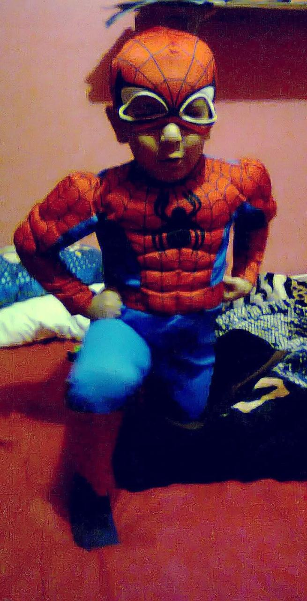
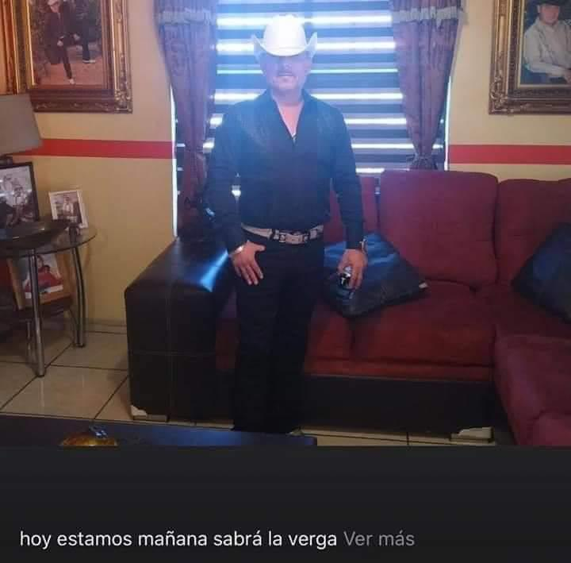

Ángel de mi guarda, mi dulce compañía, no me desampares ni de noche ni de día. No me dejes solo, que me perdería, hasta que me pongas en paz y alegría con todos los santos; Jesús, José y María. Amén.

Ser hermoso significa ser tú mismo.
Tú no necesitas ser aceptado por otros.
Tú necesitas aceptarte a ti mismo.
Ser libre, ¿no?, y todos ansiamos esa libertad.


me gustaría decirte que no pienso en mi existencia todo el tiempo pero te estaría mintiendo soy un ser sensible por lo tanto todo me conmueve todo me toca y a todo lo siento a esto le podés agregar que me gusta mucho pensar a veces pienso en que me crearon con los ingredientes perfectos para sufrir y que se me complique vivir, pero lo vuelvo a meditar y recuerdo que esa idea es fruto de mi egocentrismo pesimista, no soy tan importante como para que tal cosa sea así pero sí, a veces la vida es demasiado para mí, lo admito, y muchas veces también es muy poco viste cuando el día está nublado, extremadamente nublado, mirás al cielo y se te encandilan los ojos? a mí me pasa eso con mi vida, a veces la miro y me deslumbra, y otras veces la miro y me incinera la vista
Si no me lloran vivo, no me lloren si me muero
-.-